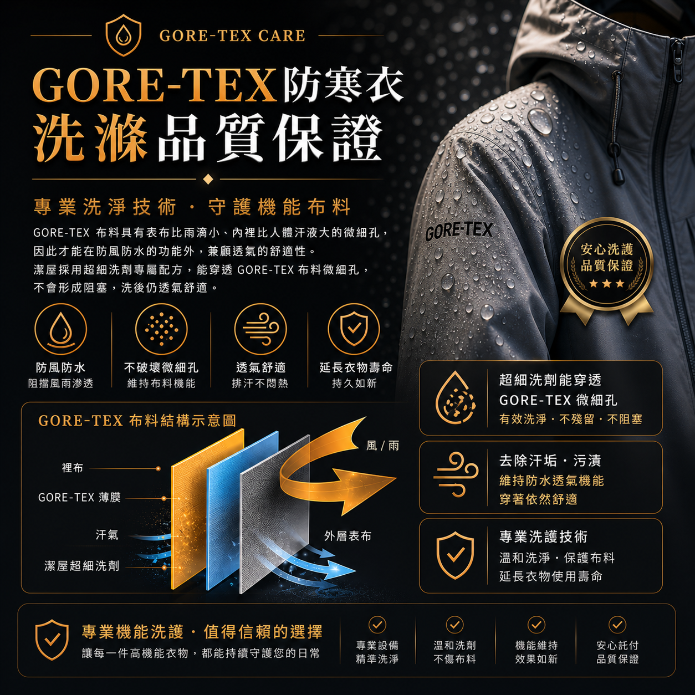

清潔時避免堵塞布料微細孔，協助維持雨水不易滲透的機能。
GORE-TEX CARE
GORE-TEX 防寒衣洗護
機能布料不只要洗乾淨，也要避免破壞微細孔結構。潔屋依洗標、材質、污損與防水透氣需求評估處理方式。

為什麼 GORE-TEX 需要專業洗護？
GORE-TEX 類機能布料靠表布、薄膜與透氣孔維持防風、防水與排濕功能，不適合使用過強或殘留性高的洗劑。
去除汗垢與髒污，降低悶熱與異味殘留。
依洗標與布料狀況選擇合適處理，不硬洗、不過度破壞。
膠條、貼合處、塗層老化或剝落狀況，會先告知風險。